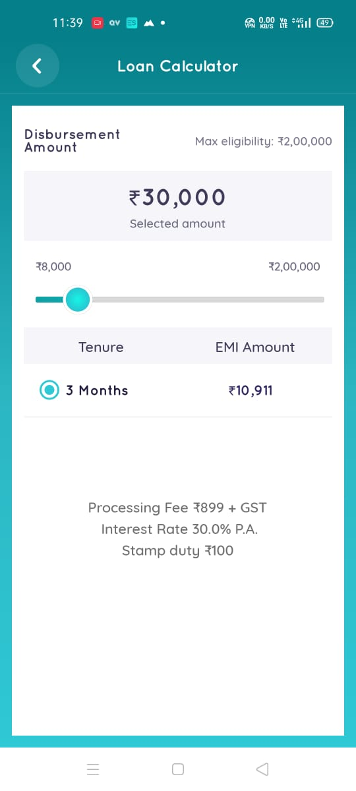
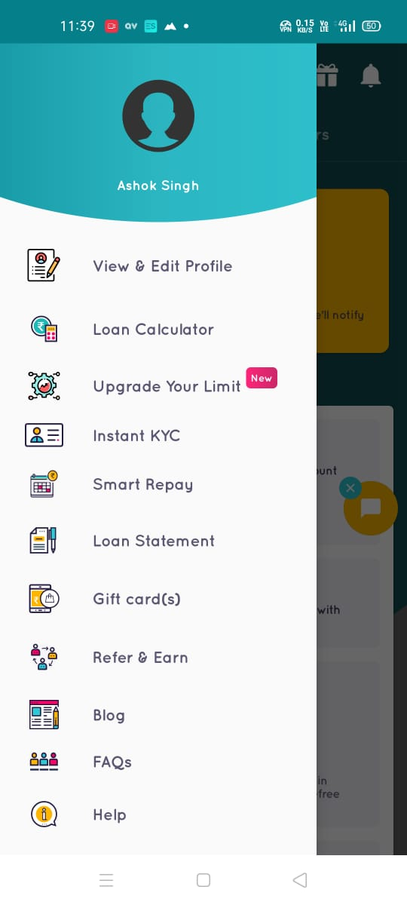

Early Salary Application Se Loan Kaise लेना है? ये जानने से पहले आइए जानते हैं कि Early Salary Loan Application क्या है । दोस्तों Early Salary Loan Application Salaried (वेतनभोगी) Professional लोगों को Personal Loan देने वाली एक android application हैं जो Play store पर Salary Advance & Personal Loan App – EarlySalary के नाम से उपलब्ध है । इस Application से कोई भी Salaried Professional (वेतनभोगी ) ₹3,000 से लेकर ₹500,000 तक का Personal Loan घर बैठे आसानी से Online Early Salary Application Se Loan ले सकता है ।
Early Salary Application के कुछ मुख्य फ़ीचर इस प्रकार है :-
- यह एक Trusted Application हैं इसमें किसी भी प्रकार का fraud का कोई डर अर्ली नहीं है । Play store पर इसे Installs 5,000,000+ लोगों ने Install किया है । औरे अभी तक Over 1.7 million Personal loans Approved किए जा चुके हैं ।
- Early Salary Application loan आप 0% -30% तक के ब्याज दर पर। 90 Day से -24 Months तक का tenure ले सकते हैं ।
- सबसे अच्छी बात यह है की आप Early Salary Application से मात्र दस मिनट में Online अपने Mobile से लोन Approved कराकर अपने बैंक में Money Transfer कर सकते हैं ।

- और भी पढ़े :Loan क्या है?
दोस्तों Early Salary Application Se Loan लेने से पहले हमें ये जानना ज़रूरी है की Early Salary Application के क्या क्या Requirements हैं ?
- कोई भी भारत का नागरिक ये लोन ले सकता है जिसकी उम्र बारह वर्ष से अधिक हो ।
- Early Salary Application Se Loan लेने के लिए अगला requirement ये है की आपकी आमदनी कम से कम 12000 रुपय प्रति महीने होना चाहिए तभी आप Early Salary Application Se Loan ले सकते हैं ।
- आपको ये भी देखना होगा की आपके Location पे ये Loan दे रहे हैं या नहीं ।
- आपके पास Mobile या कम्प्यूटर होना ज़रूरी है तभी आप Early Salary Application Se Loan के लिए Application कर पाएँगे ।
Early Salary Application Se Loan लेने के लिए Documents क्या क्या चाहिए ?
- Kyc Documents (Aadhar Card ,Voter ID Card ,Passport ) Upload करने के लिए आपके पास होने चाहिए
- Bank Statement पिछले तीन महीने का ।उस Bank के statement चाहिए जिसमें आपका हर महीने salary आता है ।
- Pan Card
- ITR की भी ज़रूरत पर सकती है कुछ Cases में ।
- एक मोबाइल नम्बर ,ईमेल ID रेजिस्ट्रेशन स्टार्ट करने के लिए ।
Early Salary Application Se Loan Kaise मिलेगा Step By Step प्रॉसेस :-
- सबसे पहले आपको गूगल Play Store पे जाकर Early Salary Application को डाउनलोड करना है ।
- Download करने के बाद अपना मोबाइल नम्बर डालकर OTP के ज़रिए account बनाकर लॉगिन कर लेना है ।
- उसके बाद आपको ये 3 Steps में कुछ Details माँगेगा ।
Step1:- Personal Details (आपको अपना नाम और पता डालना है ।)
Step2:-Professional Details (इसमें आपको अपने Job के बारे में बताना है की आप कहा job करते हैं एटेक)
Step3:-Residential Address ( आपको अपने Ghar या जाह आप रहते हो वो Address डालना है ) - ये Three Steps पूरे कर लेने के बाद आपको अपना बैंक Statement अपलोड करने के लिए बोलेगा इसके लिए आपको अपने पिछले तीन महीनो का Bank Statement pdf Format में Ready करके अपलोड कर देना है ।ध्यान रहे की आपको उसी बैंक के Statement अपलोड करने हैं जिस बैंक में आपकी सैलरी आती है ।
- Salary Statement अपलोड हो जाने के बाद आपको कुछ समय Wait करना है , आपके सैलरी statement को Early Salary Application कि टीम चेक करेगी और उसके बाद आपकी Eligibility दिखाई देगा । कि आप कितने तक का loan ले सकते हैं ।
- Loan Eligibility चेक कर लेने के बाद आपको EMI calculator में जाना है और वह जाकर Loan Amount और Tenure सलेक्ट करके अपना EMI देख सकते हैं ।

- उसके बाद आपको Kyc के TAB में जाकर अपना KYC कर लेना है ।

Instant KYC Early Salary Application से कैसे करने - ऊपर के सभी steps पूरे हो जाने के बाद आपका Early Salary Application Loan अकाउंट पूरी तरह से Activate हो जाएगा ।
- Early Salary Application Loan Account एक बार ऐक्टिवेट हो जाने के बाद कभी भी loan ले सकते हैं । और ये लोन Amount आपके खाते में कुछ ही देर में आ जाएगा ।


Early Salary Application से Loan लेना चाहिए या नहीं ?
दोस्तों मेरी राय मानो तो अगर आपको Loan लेना बहुत ज़रूरी है तो आप इस Early Salary Application से लोन ले सकते हैं आप पहले एक छोटा amount का लोन ले उसके बाद आपको अपने आप ही इसके बारे में पता चल जाएगा। वैसे अगर आपको ज़्यादा लोन की आवश्यकता है तो आप अपने Bank में भी जाकर ले सकते हैं ।